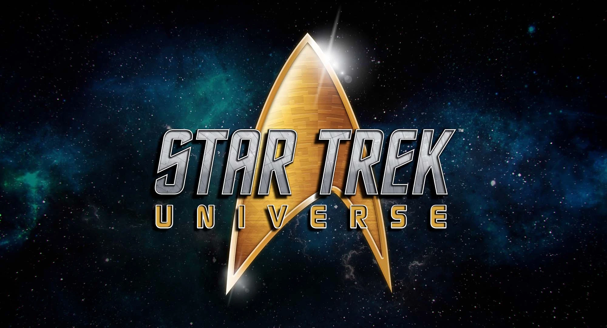
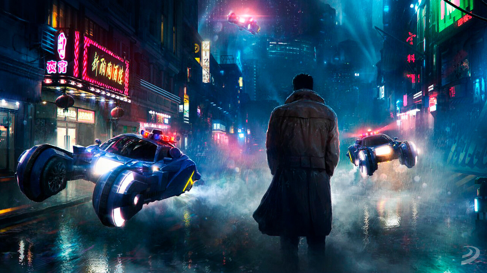
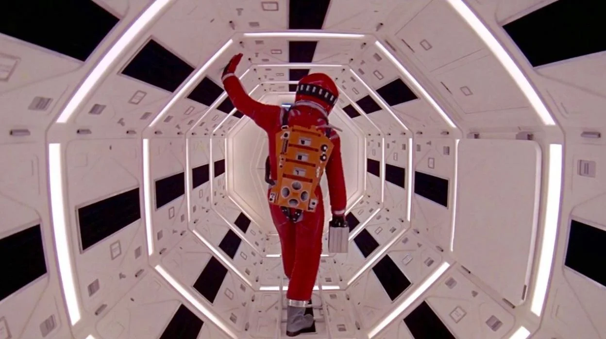

Explorando el futuro, el espacio y las posibilidades de la imaginación.
La ciencia ficción es un género literario y cinematográfico que imagina escenarios basados en avances científicos, tecnológicos o fenómenos que aún no existen. Sus historias suelen desarrollarse en el futuro, en otros planetas, dimensiones alternativas o incluso en sociedades muy diferentes a la actual.
Una de las franquicias más exitosas de todos los tiempos. Combina aventuras espaciales, tecnología futurista y una lucha constante entre el bien y el mal.

Conocida por imaginar un futuro donde la humanidad explora el universo en busca de nuevas civilizaciones y conocimientos.

Una obra maestra del cine cyberpunk que explora la inteligencia artificial y la identidad humana.

Considerada una de las películas de ciencia ficción más influyentes de toda la historia del cine.